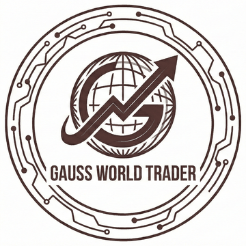
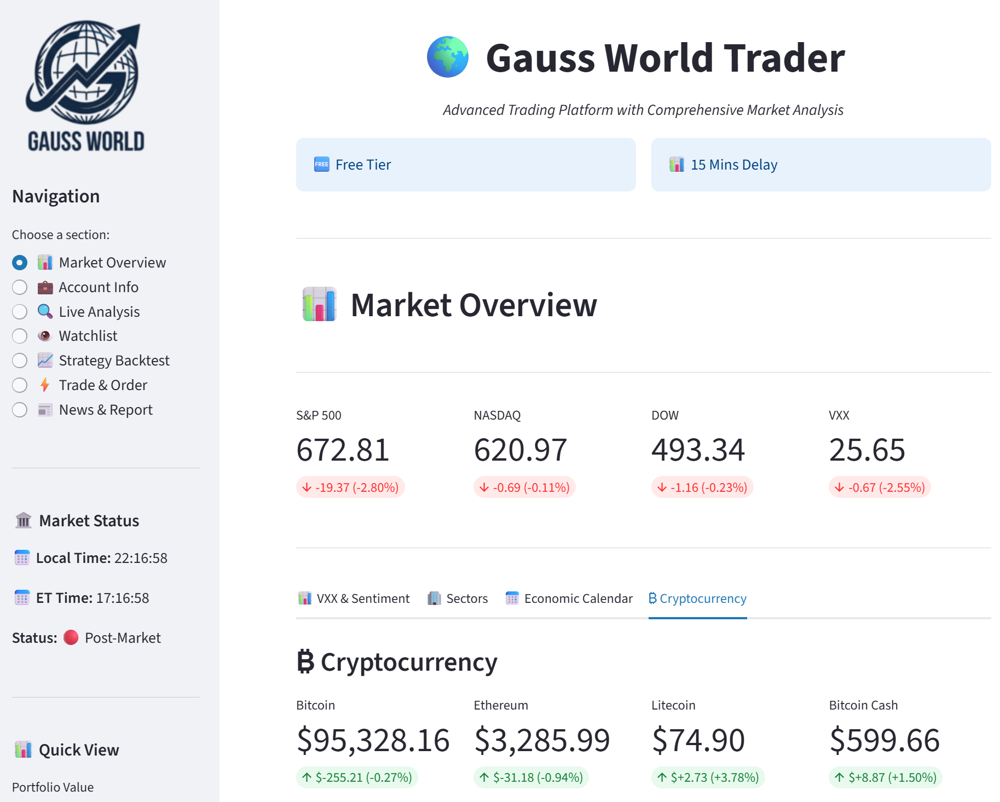
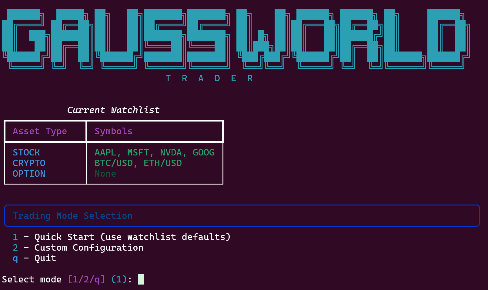

Algorithmic trading powered by
the latest ML and AI agents
An open-source Python 3.12+ trading platform that pairs a committee of LLM analyst agents with quantitative strategies, vectorbt backtesting and live execution on Alpaca.
Named after Carl Friedrich Gauss, who revolutionized statistics and probability theory — the foundations of modern quantitative finance.
A full trading stack, not just a backtester
Research, decide and execute in one codebase — from indicator math and LLM committees through to multi-leg option orders and fill notifications.
Multi-Agent Analysis
Committee-style stock analysis with technical, fundamental, sentiment, risk and decision agents — in deterministic fast or full llm mode.
Modern Async Core
Built for Python 3.12+ with async/await throughout, so data feeds and live engines share one event loop instead of blocking threads.
Vectorbt Backtests
Stock and crypto strategies run through vectorbt with walk-forward splits; options fall back to a bar-by-bar event loop.
Options Multi-Leg
Submit MLEG orders with explicit position intent, plus IV- and greeks-filtered bull/bear call and put vertical spreads.
Live Dashboard
An interactive Streamlit interface for market data, positions, orders, watchlists, backtests and agent analysis.
Multi-Source Data
Alpaca market data and news, Finnhub fundamentals and sentiment, and FRED macro series behind one provider layer.
Portfolio & Risk
Position tracking, performance metrics and per-trade risk sizing applied before any order reaches the broker.
Fill Notifications
A trade-update stream pushes submitted and filled events straight to email or Slack while strategies keep running.
CLI First
Every workflow — strategies, backtests, account info, live streaming — is a single Typer command you can script or schedule.
A committee that argues before it trades
The multi_agent strategy fans out to specialist analysts, runs an optional
bull/bear debate, sizes the risk, and only then commits to a decision — with per-run
cost tracking on every LLM call.
Technical Analyst
Reads trend, momentum and volatility indicators to argue the chart-based case.
Fundamental Analyst
Weighs company financials, valuation and macro context from Finnhub and FRED.
Sentiment Analyst
Digests market news and insider sentiment into a directional read.
Risk Manager
Pure math, no LLM: turns the committee's conviction into position limits.
Decision Maker
Reconciles every report into one action, confidence score and rationale.
Cost Guard
Semaphore-limited fan-out with a hard per-run spend ceiling on LLM usage.
fast Deterministic mode
Skips LLM calls entirely and uses weighted voting over deterministic signals — safe and free for backtests, dashboard runs and paper testing.
llm Reasoning mode
Routes agent reports and the final decision through your configured LLM provider, surfacing debate positions and usage data in the dashboard.
Strategy → Plan → Execution
Strategies never talk to a broker. They emit an abstract plan, and one execution layer decides size, order type and routing — which keeps research honest and live trading auditable.
Signals and intent
Indicators and signals are built in get_signal(), then mapped to an
abstract ActionPlan — target price, stop loss, take profit, intent.
Broker-neutral output
Plans carry no quantities and no SDK objects, so the same strategy code runs identically in a backtest and in live paper trading.
Sizing and orders
The execution engine applies risk limits and account state, picks the order type, and submits — including bracket and multi-leg option orders.
Twelve strategies, ready to run
Signal strategies work across stocks and crypto and are wired into the dashboard; options strategies run from the CLI and live engines.
| Strategy | Category | Dashboard |
|---|---|---|
| 🤖 Multi-Agent | Signal | ✓ |
| 📉 Mean Reversion | Signal | ✓ |
| 🌍 Macro Factor | Signal | ✓ |
| 📈 Momentum | Signal | ✓ |
| 🪙 Crypto Momentum | Signal | ✓ |
| ₿ BTC Volatility Breakout | Signal | ✓ |
| 💰 Value | Signal | ✓ |
| 📉 Trend Following | Signal | ✓ |
| ⚡ Scalping | Signal | ✓ |
| 📐 Statistical Arbitrage | Signal | ✓ |
| 🎡 Wheel | Options | CLI only |
| 🧩 Vertical Spread | Options | CLI only |
Dashboard and terminal
Watch the same account from an interactive dashboard or straight from your shell.


Running in four commands
Python 3.12+ and an Alpaca paper-trading key are all you need to get going.
# 1. Clone and install
git clone https://github.com/Magica-Chen/GaussWorldTrader.git
cd GaussWorldTrader
pip install -r requirements.txt
# 2. Add your keys
cp .env.example .env
# edit ALPACA_API_KEY / ALPACA_SECRET_KEY
# 3. Launch the dashboard
python dashboard.py
# 4. …or drive it from the CLI
python main_cli.py list-strategies
python main_cli.py backtest --strategy momentum AAPL --days 365Paper trading by default
ALPACA_BASE_URL decides whether every client, engine and notification
stream talks to paper or live. It ships pointing at paper — change it deliberately.
fast into
llm mode. Everything else runs without them.